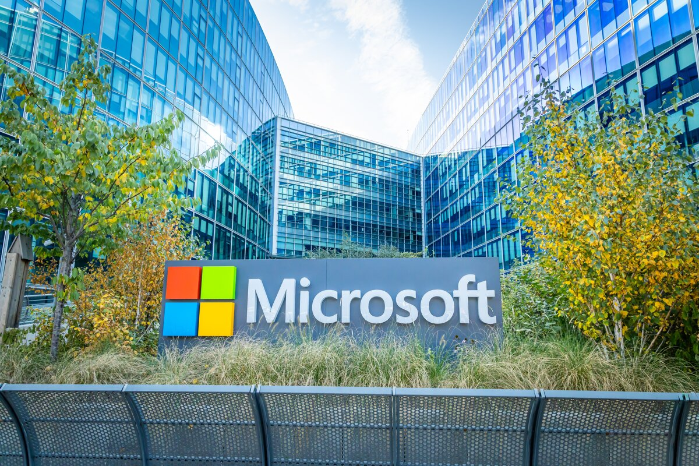

В пятницу днём в сауна-отеле Ling Bao при парке Phantasialand (Брюль, Северный Рейн-Вестфалия) автоматическое дозирующее устройство бассейна дало сбой — оно выдало сильно завышенную концентрацию хлора, в помещении бассейна пошёл хлоргас. Гости отеля начали жаловаться на самочувствие после купания. Приехавшие спасатели и пожарные Брюля (40 человек, около двух часов на месте) закрыли бассейн и подменили воду. Сначала на проблемы с дыханием жаловались 13 гостей, позже их стало 15; четверых госпитализировали, одному пришлось остаться под наблюдением. Пожарные сначала говорили о пятерых госпитализированных, позже цифру уточнили до четырёх. Бассейн уже снова открыт.
Аварийная система сигнализировала о проблеме письмом — а письма в те дни просто не доходили: облако Microsoft лежало с четверг дня минимум до пятницы обеда. Никто в отеле не узнал, что дозатор сошёл с ума. Microsoft связывала сбой с компонентом, который обрабатывает состояние серверов: проверка ошибочно признавала живые серверы мёртвыми и запускала каскадную остановку. Отдельного развёрнутого технического разбора именно по инциденту в отеле ни Microsoft, ни Phantasialand не публиковали — факты собраны из репортажа WDR и сообщения пожарной команды Брюля. Отдельная заметка для безопасности: по горячим следам пошли фишинговые письма с приманкой про «задержанные письма, которые скоро удалятся» — классика эксплуатации чужого сбоя.
Сигнализация критической системы, живущая на email-канале внешнего облака, — это единая точка отказа с чужим облаком в корневой зависимости. Вывод скучный и полезный: аварийные оповещения для систем, где ошибка бьёт по здоровью (дозация химии, вентиляция, холодильные цепи), должны дублироваться независимым каналом — SMS, выделенным GSM-сигнализатором, локальной сиреной — и опираться на локальную автоматическую защиту, не зависящую от почты и облака.
Проверьте, куда реально падают аварийные уведомления вашего оборудования — и придите туда руками в течение недели. Включите альтернативный канал для самых злых сценариев. А в дни крупных облачных сбоев не открывайте «уведомления о сбое» из писем — это сезон фишинга: заходите в сервис только вручную, не по ссылкам из почты.